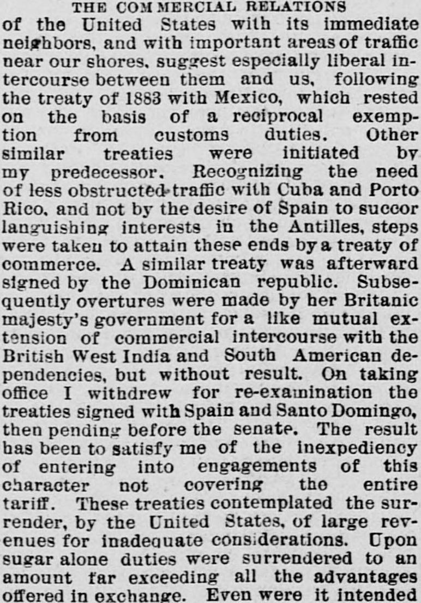

Subsequently overtures were made by her Britanic majesty's government forPosteriormente se hicieron gestiones por parte del gobierno de Su Majestad británica para
St. Paul Daily Globe. Saint Paul, Minn., December 9, 1885. Page 9. View the originalVer el original

 See the full pageVer la página completa
See the full pageVer la página completa
According to the St. Paul daily globe of December 9, 1885, a commercial treaty signed with the Dominican Republic was subsequently withdrawn from the Senate for re-examination. The official concluded that entering into such engagements was inexpedient because the treaties required the United States to surrender large revenues on sugar for inadequate advantages, provided only illusory relief to consumers, risked raising embarrassing questions under favored-nation clauses, and diminished independent control over national revenues.Según el St. Paul daily globe del 9 de diciembre de 1885, un tratado comercial suscrito con la República Dominicana fue formalmente retirado del Senado para un nuevo examen. El mandatario concluyó que concertar tales estipulaciones resultaba improcedente, habida cuenta de que exigían a los Estados Unidos resignar cuantiosas rentas arancelarias sobre el azúcar a cambio de ventajas exiguas, brindaban un alivio ilusorio a los consumidores, arriesgaban suscitar enojosas querellas bajo las cláusulas de nación más favorecida y menoscababan el manejo soberano de los ingresos públicos.
FULL TEXT:TEXTO COMPLETO:
THE COMMERCIAL RELATIONS of the United States with its immediate neighbors, and with important areas of traffic near our shores, suggest especially liberal intercourse between them and us, following the treaty of 1883 with Mexico, which rested on the basis of a reciprocal exemption from customs duties. Other similar treaties were initiated by my predecessor. Recognizing the need of less obstructed traffic with Cuba and Porto Rico, and not by the desire of Spain to succor languishing interests in the Antilles, steps were taken to attain these ends by a treaty of commerce. A similar treaty was afterward signed by the Dominican republic. Subsequently overtures were made by her Britannic majesty's government for a like mutual extension of commercial intercourse with the British West India and South American dependencies, but without result. On taking office I withdrew for re-examination the treaties signed with Spain and Santo Domingo, then pending before the senate. The result has been to satisfy me of the inexpediency of entering into engagements of this character not covering the entire tariff. These treaties contemplated the surrender, by the United States, of large revenues for inadequate considerations. Upon sugar alone duties were surrendered to an amount far exceeding all the advantages offered in exchange.LAS RELACIONES COMERCIALES de los Estados Unidos con sus vecinos inmediatos, y con importantes áreas de tráfico cerca de nuestras costas, sugieren un comercio especialmente liberal entre ellos y nosotros, siguiendo el tratado de 1883 con México, que descansaba sobre la base de una exención recíproca de derechos de aduana. Otros tratados similares fueron iniciados por mi predecesor. Reconociendo la necesidad de un tráfico menos obstruido con Cuba y Puerto Rico, y no por el deseo de España de socorrer intereses languidecientes en las Antillas, se tomaron medidas para alcanzar estos fines mediante un tratado de comercio. Un tratado similar fue firmado después por la república dominicana. Posteriormente se hicieron propuestas por el gobierno de su majestad británica para una extensión mutua similar del comercio con las dependencias británicas de las Indias Occidentales y de América del Sur, pero sin resultado. Al tomar posesión retiré para reexamen los tratados firmados con España y Santo Domingo, entonces pendientes ante el senado. El resultado ha sido satisfacerme de la inconveniencia de entrar en compromisos de este carácter que no cubran la totalidad del arancel. Estos tratados contemplaban la entrega, por los Estados Unidos, de grandes rentas por consideraciones inadecuadas. Solo sobre el azúcar se entregaron derechos por una cantidad que excedía con mucho todas las ventajas ofrecidas a cambio.
This story also ran inEsta historia también apareció en
Carried by 3 newspapers in 2 states over 2 daysLa llevaron 3 periódicos en 2 estados a lo largo de 2 días
River Falls Journal · River Falls, Pierce County, Wis. · December 10, 1885
The Worthington Advance · Worthington, Minn. · December 10, 1885